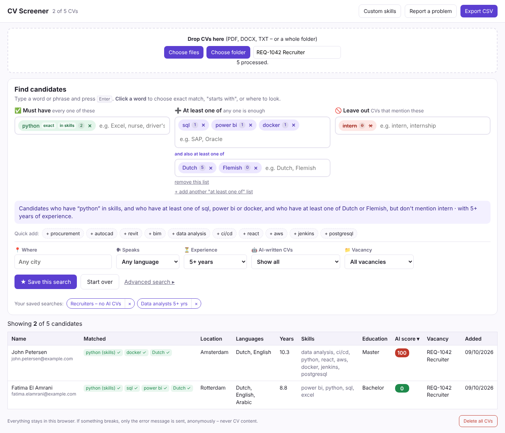
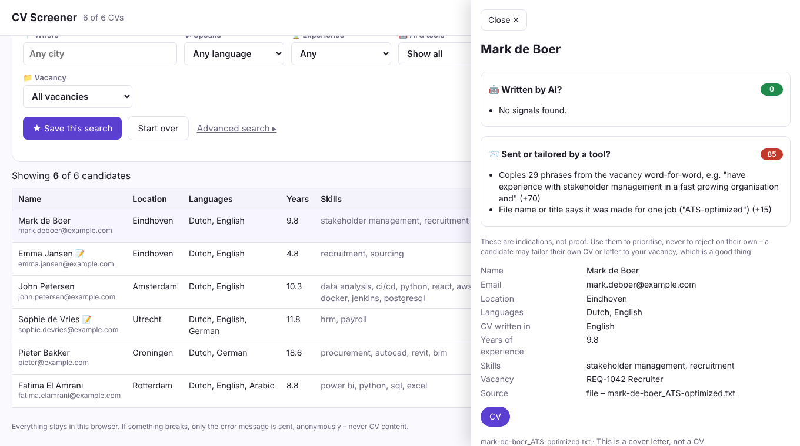
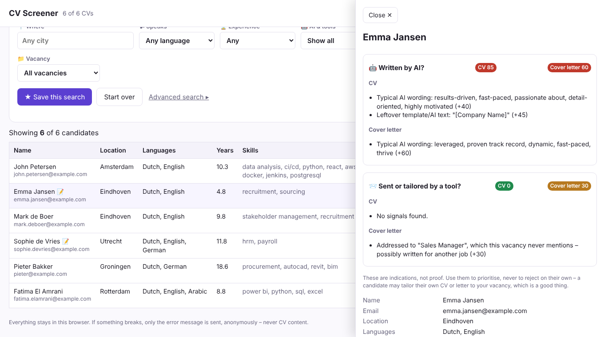

CV Screener
Read, filter and check hundreds of CVs at once, alongside your own ATS. Everything stays in your browser.
Nothing to install. Works in any modern browser (Chrome, Edge, Firefox, Safari). CVs are read only in your browser, never uploaded.
Everything in the web version, plus pulling candidates straight from your ATS page (Oleeo and others). Chrome or Edge.
Version 0.8 (test build)

Install the extension (2 minutes)
Only needed for capturing candidates from your ATS page. Otherwise just use the web version.
- Download the zip above and unzip it: right-click → Extract All.
- In Chrome, go to
chrome://extensions(Edge:edge://extensions). - Turn on Developer mode, top right.
- Click Load unpacked and choose the unzipped folder, the one with
manifest.jsonin it. - Click the puzzle piece next to the address bar and pin CV Screener.
Use it
- Add CVs: click the icon → Open screener, then drop PDF, DOCX or TXT files, or a whole folder. Fill in the vacancy/req number first if you want to filter on it later.
- From your ATS (e.g. Oleeo): open a candidate, click the icon and choose Capture candidate from this page. Attachments are fetched using your own login.
- Filter: on name, location, language, skills, years of experience, AI score and vacancy. Click a column header to sort, and a candidate for the details.
- Export CSV downloads the filtered list, ready for Excel.
- Custom skills are skills you add to the recognition yourself.
Find the right candidates
No search codes needed. Type a word or phrase in a box and press Enter:
- ✅ Must have: every one of these
- ➕ At least one of: any one is enough. Add a second list for combinations like (SAP or Oracle) and (Dutch or Flemish)
- 🚫 Leave out: hide CVs that mention these
Click a word to choose Exactly this, Starts with, or where to look (only skills, location, education…). A plain sentence under the boxes says exactly what you are searching for. ★ Save this search keeps it as a one-click button.

Written by AI, or sent by an AI tool?
Every CV gets two separate scores, shown in green, orange or red:
- 🤖 AI: was the text written by AI? It looks for typical AI wording, lists of three in every sentence, American spelling from a European applicant, a letter that never names your company, claimed experience that doesn't match the dates, vague round results, very uniform sentences, a letter far more polished than the CV, leftover template text and AI CV builders.
- 📨 Tool: was the CV sent or rewritten per vacancy by an auto-apply tool? It looks for sentences copied word-for-word from your job ad (paste it once under 📄 Vacancy text), the same person sending differently worded CVs to several vacancies, identical CVs from different people, hidden keyword text, and tool names.
Open a candidate to see exactly why. These are indications, not proof: a candidate may tailor their own CV, which is a good thing. Use them to decide what to read first, never to reject someone on their own.

Cover letters too
Drop cover letters together with the CVs. Each one is recognised and attached to the right candidate automatically (by email, name, ATS page or file name), and a 📝 shows who has one. Search covers both, or only the letter if you choose that. Both checks run on the letter as well. The tool check also spots the same letter sent to several vacancies with only the names swapped, letters shared between applicants, and letters addressed to a different job.

Typos are fine
Searching for management also finds a CV that says managment, and a typo in what you type is forgiven. If a word finds nothing, the screener suggests the closest word: Did you mean python?
Privacy and error reports
CVs and candidate details are never sent anywhere. If something breaks, only the error message is sent to the developer, anonymously, without names, file names or CV text. Something else to tell us? Use Report a problem in the screener.
Update or remove
Unzip a new version over the old folder and click ↻ on CV Screener in chrome://extensions. Your CVs are kept. Clicking Remove there also deletes every stored CV.